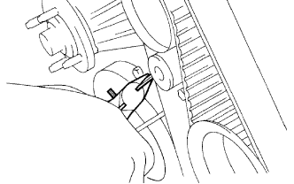
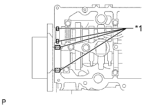
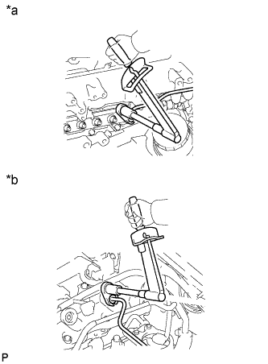
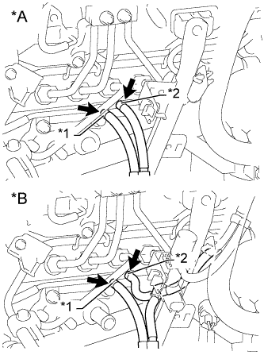
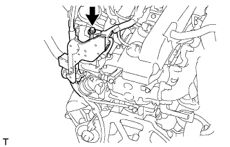

НАСОС СИСТЕМЫ ОХЛАЖДЕНИЯ (для моделей без DPF) > УСТАНОВКА |
| 1. УСТАНОВИТЕ НАСОС СИСТЕМЫ ОХЛАЖДЕНИЯ В СБОРЕ |
Временно закрепите корпус насоса системы охлаждения и новую прокладку на крышке насоса системы охлаждения с помощью болта, как показано на рисунке.
Установите новую прокладку и закрепите насос системы охлаждения 5 болтами и 2 гайками.
Затяните 6 болтов и 2 гайки.
| *1 | Гайка |
| 2. УСТАНОВИТЕ ИЗОЛЯТОР БЛОКА ЦИЛИНДРОВ |
Установите изолятор блока цилиндров на головку блока цилиндров.
| 3. УСТАНОВИТЕ КРЫШКУ РЕМНЯ ГАЗОРАСПРЕДЕЛЕНИЯ № 2 |
 |
Нанесите герметик (FIPG) на заданные участки, показанные на рисунке.
| *1 | Герметик |
Установите крышку ремня газораспределения № 2 и закрепите ее 4 болтами и гайкой.
| 4. УСТАНОВИТЕ ОПОРНЫЙ РОЛИК ПРИВОДНОГО РЕМНЯ ГАЗОРАСПРЕДЕЛЕНИЯ № 1 В СБОРЕ |
С помощью шестигранного гаечного ключа на 10 мм закрепите новую шайбу и опорный ролик приводного ремня газораспределения № 1 болтом.
Проверьте, плавно ли двигается опорный шкив.
Если опорный ролик не перемещается плавно, проверьте установку опорного ролика и шайбы.
| 5. УСТАНОВИТЕ ЗУБЧАТОЕ КОЛЕСО РАСПРЕДВАЛА |
Установите зубчатое колесо распредвала.
Вверните болт зубчатого колеса распредвала, удерживая распредвал ключом.
| 6. УСТАНОВИТЕ ПРИВОДНОЙ РЕМЕНЬ ГАЗОРАСПРЕДЕЛЕНИЯ |
Удостоверьтесь, что установочные метки совмещены, как показано на рисунке.
| *1 | Установочная метка |
Установите приводной ремень газораспределения на шкив приводного вала насоса, зубчатое колесо распредвала и опорный ролик приводного ремня газораспределения № 1, придерживаясь этой последовательности.
 |
Установите натяжитель вертикально. Затем установите пресс сверху натяжителя.
С помощью пресса медленно запрессуйте толкатель, поддерживая усилие 981-9807 Н (100-1000 кгс, 220-2205 фунт-сила-дюймов).
Совместите отверстия в толкателе и кожухе. Затем вставьте через отверстия шестигранный ключ на 1,5 мм, чтобы закрепить толкатель на месте.
Временно закрепите натяжитель приводного ремня 2 болтами, прижимая опорный ролик к приводному ремню газораспределения.
Затяните 2 болта.
|  |
Выньте из натяжителя торцевой гаечный ключ на 1,5 мм.
 |
Поверните коленчатый вал по часовой стрелке на 720° и убедитесь, что установочные метки совмещены, как показано на рисунке.
| *1 | Установочная метка |
| 7. УСТАНОВИТЕ КРЫШКУ РЕМНЯ ГАЗОРАСПРЕДЕЛЕНИЯ № 1 |
Закрепите крышку ремня газораспределения с помощью 6 шайб и 6 болтов.
| 8. УСТАНОВИТЕ КРЫШКУ ГОЛОВКИ БЛОКА ЦИЛИНДРОВ В СБОРЕ |
Удалите весь старый герметик (FIPG) с головки блока цилиндров.
|  |
Нанесите герметик на заданные участки, показанные на рисунке.
| *1 | Герметик |
Закрепите новую прокладку и крышку головки блока цилиндров 10 болтами и 2 гайками.
Установите 4 новых уплотнительных кольца форсунок в головке блока цилиндров.
| 9. УСТАНОВИТЕ ТРУБКУ ВЕНТИЛЯЦИИ КАРТЕРА |
Подсоедините 2 шланга вентиляции картера и закрепите трубку вентиляции картера болтом на крышке головки блока цилиндров.
| 10. УСТАНОВИТЕ КРОНШТЕЙН КОМПРЕССОРА № 1 |
Закрепите кронштейн крепления компрессора № 1 5 болтами.
| 11. УСТАНОВИТЕ ГЕНЕРАТОР В СБОРЕ |
 |
Установите генератор и закрепите его 2 болтами.
Подсоедините провод генератора и закрепите его гайкой.
Установите заглушку контакта.
Подсоедините разъем генератора.
| 12. УСТАНОВИТЕ КРОНШТЕЙН ГЕНЕРАТОРА |
Закрепите кронштейн генератора болтами.
| 13. ПОДСОЕДИНИТЕ КОМПРЕССОР И ЭЛЕКТРОМАГНИТНУЮ МУФТУ (для моделей с системой кондиционирования) |
Подсоедините компрессор системы кондиционирования с помощью 4 болтов.
Подсоедините разъем компрессора.
| 14. УСТАНОВИТЕ КРОНШТЕЙН ВЯЗКОСТНОГО ПОДОГРЕВАТЕЛЯ № 1 В СБОРЕ (для автомобилей, предназначенных для эксплуатации в холодном климате) |
Закрепите кронштейн вязкостного подогревателя № 1 4 болтами.
| 15. УСТАНОВИТЕ ВЯЗКОСТНЫЙ ПОДОГРЕВАТЕЛЬ С ЭЛЕКТРОМАГНИТНОЙ МУФТОЙ В СБОРЕ (для автомобилей, предназначенных для эксплуатации в холодном климате) |
Установите вязкостный подогреватель с электромагнитной муфтой и закрепите его 2 болтами.
Подсоедините перепускной шланг охлаждающей жидкости и шланг охлаждающей жидкости.
Подсоедините разъем вязкостного подогревателя.
| 16. УСТАНОВИТЕ ВЫХОДНОЙ ПАТРУБОК КОМПРЕССОРА |
Закрепите выходной коленчатый патрубок компрессора 2 болтами и затяните зажим шланга.
Закрепите кронштейн жгута проводов болтом.
Установите 3 зажима жгута проводов.
| 17. УСТАНОВИТЕ КОРПУС ВОЗДУШНОГО ФИЛЬТРА В СБОРЕ |
Установите корпус воздушного фильтра и закрепите его 3 болтами.
| 18. УСТАНОВИТЕ ФИЛЬТРУЮЩИЙ ЭЛЕМЕНТ ВОЗДУШНОГО ФИЛЬТРА В СБОРЕ |
| 19. УСТАНОВИТЕ КРЫШКУ ВОЗДУШНОГО ФИЛЬТРА В СБОРЕ |
Присоедините 4 зажима, чтобы закрепить крышку воздушного фильтра.
За исключением моделей, предназначенных для эксплуатации в холодном климате:
Подсоедините разъем датчика массового расхода воздуха и закрепите его 2 зажимами.
Для автомобилей, предназначенных для эксплуатации в холодном климате:
Подсоедините разъем датчика массового расхода воздуха и закрепите его 3 зажимами.
| 20. УСТАНОВИТЕ ШЛАНГ ВОЗДУШНОГО ФИЛЬТРА № 1 |

| *1 | Шланг воздушного фильтра № 1 | *2 | Входной коленчатый патрубок компрессора |
| *3 | Крышка воздушного фильтра | *4 | Выступы |
| *5 | Канавка | - | - |
| *a | Верхняя сторона | *b | Передняя сторона автомобиля |
Установите шланг воздушного фильтра №1.
Затяните 2 шланговых хомута.
| 21. УСТАНОВИТЕ КОЖУХ ВЕНТИЛЯТОРА |
Установите шкив вентилятора на насос системы охлаждения.
Подсоедините перепускной шланг охлаждающей жидкости № 2 к впускному патрубку охлаждающей жидкости.
Временно закрепите 4 гайками кожух вместе с вентилятором вискомуфты на насосе системы охлаждения. Затяните гайки вручную до упора.
 |
Присоедините захваты кожуха к радиатору, как показано на рисунке.
Установите кожух вентилятора на радиатор и закрепите 2 болтами.
Установите поликлиновой ремень вентилятора и генератора (Нажмите здесь).
Закрепите вентилятор с вискомуфтой в сборе на насосе системы охлаждения 4 гайками.
Присоедините перепускной шланг охлаждающей жидкости № 2 к зажиму на кожухе вентилятора.
Для моделей с автоматической трансмиссией:
 |
Подсоедините 2 патрубка масляного радиатора.
| *a | Правая сторона |
| *b | 2 - 7 мм |
Присоедините 2 шланга масляного радиатора к зажиму на кожухе вентилятора.
Подсоедините перепускной шланг охлаждающей жидкости № 2 к расширительному бачку радиатора.
Подсоедините перепускной шланг охлаждающей жидкости № 1 к кожуху вентилятора и закрепите его 2 зажимами.
Установите расширительный бачок радиатора и закрепите его 3 болтами.
| 22. УСТАНОВИТЕ ВОЗДУШНЫЙ ШЛАНГ ПРОМЕЖУТОЧНОГО ОХЛАДИТЕЛЯ |
Совместите нанесенную краской метку на воздушном шланге промежуточного охладителя с рельефной меткой на впускном патрубке.
| *1 | Рельефная метка |
| *2 | Метка, нанесенная краской |
| *a | Задняя сторона автомобиля |
| *b | Левая сторона |
| *c | Верх |
Затяните 2 зажима.
Подсоедините вакуумный шланг.
| 23. УСТАНОВИТЕ ВОЗДУШНЫЙ ШЛАНГ № 1 |
 |
Совместите нанесенную краской метку на воздушном шланге промежуточного охладителя с рельефной меткой на промежуточном охладителе.
| *1 | Рельефная метка |
| *2 | Метка, нанесенная краской |
| *a | Задняя сторона автомобиля |
| *b | Левая сторона |
| *c | Верх |
Затяните 2 зажима.
| 24. УСТАНОВИТЕ ПАТРУБОК РАДИАТОРА № 1 |
 |
Установите патрубок радиатора и присоедините зажим.
| *1 | Выступы |
| *2 | Метка, нанесенная краской |
| *a | Верх |
| *b | Левая сторона |
| 25. УСТАНОВИТЕ ПЕРЕДНИЙ КРОНШТЕЙН ОТОПИТЕЛЯ (для автомобилей, предназначенных для эксплуатации в холодном климате) |
Установите передний кронштейн подогревателя и закрепите его 2 болтами.
| 26. УСТАНОВИТЕ ЖГУТ ЭЛЕКТРОПРОВОДКИ ДВИГАТЕЛЯ № 3 (для автомобилей, предназначенных для эксплуатации в холодном климате) |
Заверните 2 гайки на выводах аккумуляторной батареи.
Присоедините 3 зажима жгута проводов к кожуху вентилятора.
| 27. УСТАНОВИТЕ КРЫШКУ ГОЛОВКИ БЛОКА ЦИЛИНДРОВ № 2 В СБОРЕ |
 |
Закрепите крышку головки блока цилиндров № 2 4 болтами.
Присоедините 2 зажима жгута проводов и подсоедините жгут проводов к крышке головки блока цилиндров № 2.
Подсоедините 4 разъема форсунок.
| 28. УСТАНОВИТЕ ТОПЛИВНУЮ ТРУБКУ ВЫСОКОГО ДАВЛЕНИЯ № 4 |
 |
Временно закрепите топливную трубку высокого давления № 4 гайками штуцеров.
Заверните болт.
|  |
С помощью разрезной головки на 17 мм затяните гайку штуцера топливной трубки высокого давления со стороны топливной системы Common Rail.
| *a | Со стороны топливной системы Common Rail |
| *b | Со стороны форсунки |
С помощью разрезной головки на 17 мм затяните гайки штуцеров топливной трубки высокого давления со стороны форсунки.
| 29. УСТАНОВИТЕ ОПОРУ КОЛЛЕКТОРА С ЭЛЕКТРОВАКУУМНЫМ КЛАПАНОМ |
|  |
Закрепите опору коллектора с электровакуумным клапаном 2 болтами и подсоедините вакуумные шланги № 3 и № 4.
| *A | Для моделей без системы РОГ |
| *B | Для моделей с системой РОГ |
| *1 | Метка, нанесенная белой краской |
| *2 | Синяя метка |
Для моделей с охладителем РОГ:
Подсоедините вакуумный шланг № 3.
 |
Для моделей с системой РОГ:
Подсоедините вакуумные шланги № 2 и № 3.
| *1 | Желтая метка |
| *2 | Розовая метка |
Подсоедините вакуумный шланг № 1.
Подсоедините разъем электровакуумного клапана.
Для моделей без системы РОГ:
Подсоедините разъем.
Для моделей с системой РОГ без охладителя РОГ:
Подсоедините 2 разъема.
Для моделей с системой РОГ с охладителем РОГ:
Подсоедините 3 разъема.
| 30. УСТАНОВИТЕ ПАТРУБОК ПОДАЧИ ВОЗДУХА С КОРПУСОМ ДРОССЕЛЬНОЙ ЗАСЛОНКИ ДИЗЕЛЬНОГО ДВИГАТЕЛЯ В СБОРЕ (для моделей без системы РОГ) |
 |
Установите новую прокладку на впускной коллектор.
 |
Установите патрубок подачи воздуха с корпусом дроссельной заслонки дизельного двигателя в сборе и закрепите 3 болтами.
Подсоедините разъем датчика положения дроссельной заслонки.
| 31. ПОДСОЕДИНИТЕ ЖГУТ ЭЛЕКТРОПРОВОДКИ ДВИГАТЕЛЯ (для моделей без системы РОГ) |
 |
Для моделей с левосторонним рулевым управлением:
Подсоедините жгут электропроводки двигателя с помощью зажима и вверните 2 болта.
|  |
Для моделей с правосторонним рулевым управлением:
Подсоедините жгут электропроводки двигателя с помощью болта.
| 32. УСТАНОВИТЕ ОПОРУ ПАТРУБКА ПОДАЧИ ВОЗДУХА (для моделей без системы РОГ) |
 |
Предварительно установите опору патрубка подачи воздуха, закрепив ее 3 болтами.
Затяните болт, обозначенный А.
Затяните 2 болта В.
| 33. УСТАНОВИТЕ ТОПЛИВНЫЕ ТРУБКИ ВЫСОКОГО ДАВЛЕНИЯ № 1, № 2 И № 3 (для моделей без системы РОГ) |
Временно закрепите топливные трубки высокого давления № 1, № 2 и № 3 гайками штуцеров.
 |
Закрепите зажимы топливных трубок высокого давления № 2 и № 3 2 болтами и 2 гайками, как показано на рисунке.
| *1 | Топливная трубка высокого давления № 2 |
 |
С помощью разрезной головки на 17 мм затяните гайки штуцеров топливной трубки высокого давления со стороны топливной системы Common Rail.
| *a | Со стороны топливной системы Common Rail |
| *b | Со стороны форсунки |
С помощью разрезной головки на 17 мм затяните гайки штуцеров топливной трубки высокого давления со стороны форсунки.
| 34. УСТАНОВИТЕ КРОНШТЕЙН КОРПУСА ДРОССЕЛЬНОЙ ЗАСЛОНКИ (для моделей без системы РОГ) |
 |
Установите кронштейн корпуса дроссельной заслонки и предварительно закрепите его 3 болтами.
Затяните 3 болта кронштейна корпуса дроссельной заслонки в порядке, показанном на рисунке.
| 35. УСТАНОВИТЕ ВПУСКНОЙ ПАТРУБОК № 1 (для моделей без системы РОГ) |
Подсоедините впускной патрубок № 1 с воздушным шлангом и вверните 2 болта.
Затяните 2 зажима воздушного шланга № 1.
Затяните зажим воздушного шланга промежуточного охладителя.
Подсоедините вакуумный шланг к разъему датчика абсолютного давления в коллекторе.
Подсоедините 3 разъема к датчику температуры воздуха на впуске, электродвигателю привода дроссельной заслонки и датчику абсолютного давления в коллекторе.
Установите 2 зажима.
| 36. УСТАНОВИТЕ ВАКУУМНУЮ ТРУБКУ № 4 В СБОРЕ (для моделей без системы РОГ) |
Подсоедините вакуумную трубку № 4 с помощью болта.
| 37. УСТАНОВИТЕ ВХОДНОЙ ПАТРУБОК ОТОПИТЕЛЯ (для моделей без системы РОГ) |
Подсоедините входной патрубок отопителя с помощью болта.
| 38. УСТАНОВИТЕ ЭЛЕКТРИЧЕСКИЙ КЛАПАН УПРАВЛЕНИЯ РОГ В СБОРЕ (для моделей с системой РОГ) |
Установите электрический клапан управления РОГ в сборе (Нажмите здесь).
| 39. ПОДСОЕДИНИТЕ ПРОВОД К ОТРИЦАТЕЛЬНОМУ ВЫВОДУ АККУМУЛЯТОРНОЙ БАТАРЕИ |
| 40. ДОБАВЬТЕ ОХЛАЖДАЮЩУЮ ЖИДКОСТЬ ДВИГАТЕЛЯ |
Затяните пробку сливного крана радиатора вручную.
Затяните пробку сливного крана блока цилиндров.
Заполните радиатор охлаждающей жидкостью с увеличенным сроком замены "Super Long Life Coolant (SLLC)" от компании Тойота, залив ее в трубопровод B расширительного бачка.
| Параметр / Устройство | Заданные условия | |
| для моделей с автоматической трансмиссией | Для моделей с задним подогревателем | 14,9 литра (15,7 кварты США, 13,1 английской кварты) |
| Для моделей без заднего подогревателя | 13,1 литра (13,8 кварты США, 11,5 английской кварты) | |
| для моделей с механической трансмиссией | Для моделей с задним подогревателем | 15,0 литра (15,8 кварты США, 13,2 английской кварты) |
| Для моделей без заднего подогревателя | 13,2 литра (13,9 кварты США, 11,6 английской кварты) | |
Несколько раз сожмите рукой входной и выходной патрубки радиатора, затем проверьте уровень охлаждающей жидкости.
Если уровень охлаждающей жидкости опускается ниже линии В, долейте охлаждающую жидкость SLLC Toyota до линии В.
Установите пробку расширительного бачка радиатора.
Установите вентиляционную пробку с помощью гаечного ключа.
Выпустите воздух из системы охлаждения.
Прогревайте двигатель, пока не откроется термостат. Когда термостат откроется, несколько минут прокачивайте охлаждающую жидкость.
Поддерживайте частоту вращения коленчатого вала двигателя на уровне 2500–3000 об/мин.
Несколько раз сожмите рукой входной и выходной патрубки радиатора, чтобы удалить воздух.
Остановите двигатель и подождите, пока охлаждающая жидкость остынет до температуры окружающего воздуха.
Когда охлаждающая жидкость остынет, убедитесь, что она находится на уровне отметки FULL.
Если уровень охлаждающей жидкости ниже отметки FULL, долейте SLLC от компании Тойота до этой отметки.
| 41. УДАЛИТЕ ВОЗДУХ ИЗ ТОПЛИВНОЙ СИСТЕМЫ |
 |
С помощью ручного насоса, установленного на крышке топливного фильтра, удалите воздух из топливной системы. Продолжайте прокачку, пока сопротивление насоса при работе не возрастет.
Запустите двигатель.
Если двигатель запускается, перейдите к следующему шагу.
Если запуск двигателя невозможен, прокачайте систему снова с помощью ручного насоса до повышения сопротивления насоса (см. процедуры выше). Затем запустите двигатель.
Выключите зажигание.
Подсоедините портативный диагностический прибор к DLC3.
Включите зажигание (IG) и портативный диагностический прибор.
Сбросьте коды DTC (Нажмите здесь).
Запустите двигатель.*1
 |
Войдите в следующие меню: Powertrain / Engine and ECT / Active Test / Test the Fuel Leak.*2
| *a | Для справки Испытание в режиме Active Test |
Выполните следующее испытание 5 раз с интервалами включения/выключения 10 с: Active Test / Test the Fuel Leak.*3
После 5-го испытания в режиме Active Test дайте двигателю поработать на холостом ходу в течение не менее 3 мин.

Войдите в следующие меню: Powertrain / Engine and ECT / DTC.
Считайте текущие коды DTC.
Сбросьте коды DTC (Нажмите здесь).
Повторите операции с *1 по *3.
Войдите в следующие меню: Powertrain / Engine and ECT / DTC.
Считайте текущие коды DTC.
| 42. ПРОВЕРЬТЕ, НЕТ ЛИ УТЕЧЕК ОХЛАЖДАЮЩЕЙ ЖИДКОСТИ |
Заполните радиатор охлаждающей жидкостью и подсоедините приспособление для опрессовки системы охлаждения и проверки пробки радиатора.
Прогрейте двигатель.
С помощью приспособления для опрессовки системы охлаждения и проверки пробки радиатора увеличьте давление в радиаторе до 123 кПа (1,3 кгс/см2, 18 фунтов на кв. дюйм) и убедитесь, что давление не падает.
Если давление снижается, проверьте на наличие утечек шланги, радиатор и насос системы охлаждения. При отсутствии внешних утечек проверьте сердцевину нагревателя, блок цилиндров и головку.
| 43. ПРОВЕРЬТЕ, НЕТ ЛИ УТЕЧЕК ТОПЛИВА |
Убедитесь, что когда двигатель остановлен, нет утечки из какой-либо части топливной системы. При обнаружении утечки топлива отремонтируйте или замените детали, если это необходимо.
Запустите двигатель и убедитесь, что в топливной системе нет утечек. При обнаружении утечки топлива отремонтируйте или замените детали, если это необходимо.
Отсоедините возвратный шланг от топливной системы Common Rail.
Запустите двигатель и проверьте возвратный трубопровод на наличие утечек топлива.
В случае наличия утечек топлива замените топливную систему Common Rail.
Подсоедините портативный диагностический прибор к DLC3.
Запустите двигатель и включите портативный диагностический прибор.
В режиме Active Test портативного диагностического прибора выберите Fuel Leak Test.
Если портативный диагностический прибор недоступен, быстро до упора нажмите педаль акселератора. Увеличьте частоту вращения коленчатого вала двигателя до максимума и поддерживайте ее в течение 2 с. Повторите эту операцию несколько раз.
Убедитесь в отсутствии утечек топлива из топливной системы.
Подсоедините возвратный шланг к топливной системе Common Rail.
| 44. УСТАНОВИТЕ ЗАДНЮЮ ЗАЩИТУ КАРТЕРА ДВИГАТЕЛЯ В СБОРЕ |
Установите заднюю защиту картера двигателя и закрепите ее 4 болтами.
| 45. УСТАНОВИТЕ ЗАЩИТУ КАРТЕРА ДВИГАТЕЛЯ № 1 В СБОРЕ |
Установите защиту картера двигателя № 1 и закрепите ее 4 болтами.
| 46. УСТАНОВИТЕ НИЖНЮЮ ОБЛИЦОВКУ ПЕРЕДНЕГО БАМПЕРА |
Установите нижнюю накладку переднего бампера и закрепите ее фиксатором и 5 болтами.
| 47. УСТАНОВИТЕ ВЕРХНЕЕ УПЛОТНЕНИЕ КРОНШТЕЙНА РАДИАТОРА |
Установите верхнее уплотнение кронштейна радиатора и закрепите его 13 фиксаторами.